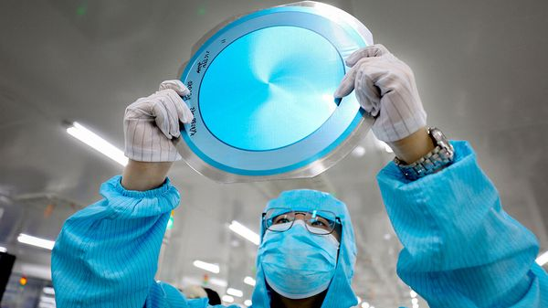
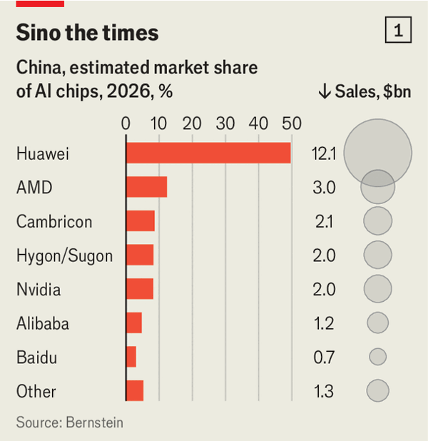
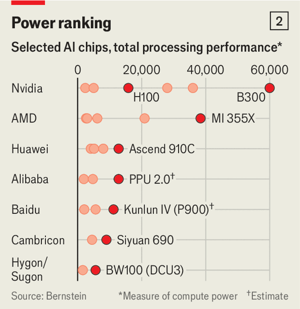

Jul 09, 2026 05:22 AM | TAIPEI

When last month the chip industry’s elite descended on Taipei for Computex, an annual trade show, two topics dominated discussions. The first was artificial intelligence, which has turned semiconductors into one of the world’s most profitable industries. The second was China. Its chipmakers were absent from the event, but their shadow was long.
The fascination with China is easy to explain. A week before Computex, Huawei, the country’s tech-hardware champion, unveiled a technique that stacks layers of circuits onto a chip· to get better performance without relying on the latest Western manufacturing tools. Investors are also signalling confidence. The share prices of semiconductor firms on Hong Kong’s stock market has risen by 140% over the past year, beating a comparable American index. Alibaba and Baidu, two Chinese internet giants, intend to spin off their chip-design businesses. CXMT, a maker of memory chips, is preparing a public listing.
China’s potential for self-sufficiency in chipmaking is one of the industry’s biggest questions. The answer matters because “compute”—the processors and memory that train and run AI models—has become the currency of technological power. At the end of 2025 China had only around one-seventh of the compute capacity of America. Closing the gap requires mastering two very different activities: designing chips and manufacturing them. China has made remarkable progress in the first. In the second, it has much further to go.
China used to be miles behind in chip design. Until 2023 Nvidia, which dominates the market for AI chips, met around 90% of China’s demand. Export controls changed that. Since America restricted sales of advanced chips to China in October 2022, Uncle Sam’s policy has oscillated. But China’s response has been steady: regulators have consistently steered domestic firms away from foreign chips, even when they are legally obtainable.

The result has been a protected home market. Alibaba and Baidu are designing processors in-house, while upstarts such as Cambricon have flourished with limited competition. Domestic designers are projected to capture around four-fifths of spending in China on AI chips this year (see chart 1). Qingyuan Lin of Bernstein, a broker, jokes that America has done more to strengthen China’s semiconductor industry than the country’s own government.
China’s market is big enough to sustain an industry. Local cloud giants are expected to spend more than $400bn on AI infrastructure over the next three years, much of it on compute. The government is said to be planning another $295bn of spending on data centres over five years.
China has plenty of people with the right skills too. Many Chinese chip designers cut their teeth working for American firms like Nvidia and AMD. Kyle Chan of the Brookings Institution, a think-tank in Washington, argues that the pool is now deep enough for even small startups to recruit entire design teams.
Talented designers are finding ways round sanctions. One approach is to use brute force. Huawei’s CloudMatrix system links 384 of the company’s Ascend processors to challenge Nvidia’s latest AI systems (though it consumes four times as much power). Another is tighter integration of hardware and software. In April DeepSeek, a Chinese AI lab, released a large language model tuned to Huawei’s silicon. Chinese designers are also embracing FP8, a lower-precision data format that helps models run efficiently on less powerful chips. Huawei is also working to undermine the advantage Nvidia enjoys from its widely used CUDA software. Its own platform, CANN, is designed to make switching from Nvidia’s chips easier. The founder of one Chinese AI startup says that the software gap, once enormous, is starting to close.
But such resourcefulness can take China only so far. Bernstein notes that Huawei’s top chip, the Ascend 910C, delivers just four-fifths of the performance of Nvidia’s H100, released almost four years ago. Homegrown chips compete mainly with the degraded processors Nvidia is allowed to sell in China (see chart 2). They are also mostly confined to “inference”—running existing models—rather than the far more demanding task of training frontier AI from scratch.

The remaining gap is less in designing chips than in making them. The fastest processors require the most advanced production lines. Chinese designers are barred from using the latest processes from foundries such as TSMC, a Taiwanese contract manufacturer. Domestic foundries, cut off from purchasing extreme-ultraviolet (EUV) lithography gear from ASML, a Dutch toolmaker, cannot reliably mass-produce chips with transistors less than seven nanometres across (the cutting edge is 3nm and below). Even for less advanced chips, capacity is constrained.
Consequently, China’s demand for AI processors far outstrips what it can procure. Zephyr, a pseudonymous analyst at Citrini, a research firm, notes that Chinese companies make up for the shortfall by renting cloud capacity abroad or by smuggling chips into the country. Advanced memory is another bottleneck. Almost all the high-bandwidth memory (HBM) needed for AI is made by three firms: Micron of America, and Samsung and SK Hynix of South Korea.
China is spending heavily to catch up. Since 2019 annual imports of chipmaking kit have tripled, to $39bn, accounting for some 40% of global demand. Much of this is to produce older chips, but some is being used for advanced fabrication. At the same time, local firms like Naura and AMEC now offer competitive alternatives for tools in critical steps like chemical deposition, etching and wafer cleaning. China is even making headway in HBMs. SemiAnalysis, a research firm, expects CXMT’s share of global HBM production to rise from almost nothing today to around 12% by 2028.
For all the progress, however, China’s self-sufficiency drive hits a wall with EUV lithography, essential for printing tiny circuits. Despite years of access to ASML’s older deep-ultraviolet (DUV) machines, China has yet to produce a domestic equivalent. Most industry estimates put a Chinese-made EUV at around a decade away, though America’s commerce department believes the country may have obtained one machine illicitly·.
Without these advanced printers, Chinese chipmakers are pursuing workarounds to extract more performance from DUV machines. One is “multi-patterning”, which repeatedly exposes a single silicon wafer to multiple passes of a lithography tool. This etches smaller features, but adds cost, slows production and increases the chance of defects. Another is advanced packaging, which links multiple chips made using older technology into a single system. Huawei’s announcement before Computex signalled that the company was seeking to get closer to leading-edge performance using older DUV tools.
Although China is still some distance from chipmaking’s technological frontier, its progress should not be ignored. Consider Apple. Amid a worsening shortage of memory chips, the iPhone-maker is seeking permission from the American government to buy older-generation memory from CXMT. If it wins approval, an American business will be helping to bankroll the very industry its government has spent years trying to contain. ■
To track the trends shaping commerce, industry and technology, sign up to “The Bottom Line”, our weekly subscriber-only newsletter on global business.